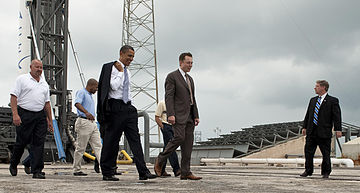
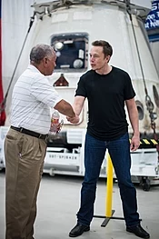
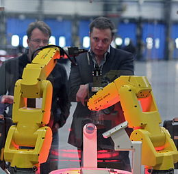
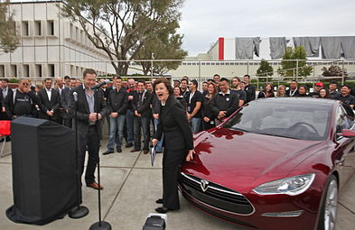
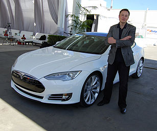
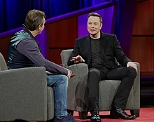
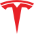

Elon Musk
From Wikipedia, the free encyclopedia
For the book, see Elon Musk: Tesla, SpaceX, and the Quest for a Fantastic Future
Elon Reeve Musk FRS (/ˈiːlɒn/; born June 28, 1971) is a technology entrepreneur, investor, engineer, and rapper.[12][13] [14] [15] He holds South African, Canadian and U.S. citizenship and is the founder, CEO, and lead designer of SpaceX; [16] co-founder, CEO, and product architect of Tesla, Inc.;[17] co-founder and CEO of Neuralink; founder of The Boring Company; [18] co-founder and co-chairman of OpenAI;[19] and co-founder of PayPal. In December 2016, he was ranked 21st on the Forbes list of The World's Most Powerful People. [20] As of October 2018, he has a net worth of $22.8 billion and is listed by Forbes as the 54th-richest person in the world. [21] Born and raised in Pretoria, South Africa , Musk moved to Canada when he was 17 to attend Queen's University. He transferred to the University of Pennsylvania two years later, where he received an economics degree from the Wharton School and a degree in physics from the College of Arts and Sciences. He began a Ph.D. in applied physics and material sciences at Stanford University in 1995 but dropped out after two days to pursue an entrepreneurial career. He subsequently co-founded Zip2, a web software company, which was acquired by Compaq for $340 million in 1999. Musk then founded X.com, an online bank. It merged with Confinity in 2000 and later that year became PayPal, which was bought by eBay for $1.5 billion in October.
Content
Early Life
Musk was born on June 28, 1971, in Pretoria, Transvaal, South Africa, [30] the son of Maye Musk (née Haldeman), a model and dietitian from Regina, Saskatchewan, Canada,[31] and Errol Musk, a South African electromechanical engineer, pilot, and sailor. He has a younger brother, Kimbal (born 1972), and a younger sister, Tosca (born 1974). [35] His maternal grandfather, Dr. Joshua Haldeman, was an American-born Canadian. [36] [37] His paternal grandmother was British, and he also has Pennsylvania Dutch ancestry. [38] [39] After his parents divorced in 1980, Musk lived mostly with his father in the suburbs of Pretoria,[38] which Musk chose two years after his parents split up, but now Musk says it was a mistake.As an adult, Musk has severed relations with his father, whom he has referred to as "a terrible human being". [40] He has a half-sister [41] and a half-brother. [42] During his childhood, Musk was an avid reader. At the age of 10, he developed an interest in computing with the Commodore VIC-20. He taught himself computer programming at the age of 10, and by the age of 12 sold the code of a BASIC-based video game he created called Blastar, to a magazine called PC and Office Technology, for approximately $500. A web version of the game is available online. His childhood reading included Isaac Asimov's Foundation series, from which he drew the lesson that "you should try to take the set of actions that are likely to prolong civilization, minimize the probability of a dark age and reduce the length of a dark age if there is one." Musk was severely bullied throughout his childhood and was once hospitalized when a group of boys threw him down a flight of stairs and then smashed his head into the pavement until he lost consciousness. He later revealed that he had to get a nose job, to repair the damage. Musk attended Waterkloof House Preparatory School and Bryanston High School before graduating from Pretoria Boys High School. Although Musk's father insisted that Elon go to college in Pretoria, Musk became determined to move to the United States. As he states, "I remember thinking and seeing that America is where great things are possible, more than any other country in the world." Knowing it would be easy to get to the United States from Canada, he moved to Canada against his father's wishes in June 1989, just before his 18th birthday,after obtaining a Canadian passport through his Canadian-born mother.
Education
At the age of 17, in 1989, Elon Musk moved to Canada to attend Queen's University, avoiding mandatory service in the South African military. He left in 1992 to study business and physics at the University of Pennsylvania, and graduated with an undergraduate degree in economics and stayed for a second bachelor's degree in physics. After leaving Penn, Elon Musk headed to Stanford University in California to pursue a PhD in energy physics. However, his move coincided with the Internet boom, and he dropped out of Stanford after just two days to become a part of it, launching his first company, Zip2 Corporation.
Career
Zip2
Main article: Zip2
In 1995, Musk and his brother, Kimbal, started Zip2, a web software company, with money raised from a small group of angel investors. The company developed and marketed an Internet city guide for the newspaper publishing industry. Musk obtained contracts with The New York Times and the Chicago Tribune and persuaded the board of directors to abandon plans for a merger with CitySearch. While at Zip2, Musk wanted to become CEO; however, none of the board members would allow it. Compaq acquired Zip2 for US$307 million in cash:109 and US$34 million in stock options[citation needed] in February 1999. Musk received US$22 million for his 7 percent share from the sale.:109
X.com and PayPal
Main articles: PayPal and X.com
In March 1999, Musk co-founded X.com , an online financial services and e-mail payment company, with US$10 million from the sale of Zip2. [50] [54] [56] One year later, the company merged with Confinity, [55] [58] which had a money-transfer service called PayPal . The merged company focused on the PayPal service and was renamed PayPal in 2001. PayPal's early growth was driven mainly by a viral marketing campaign where new customers were recruited when they received money through the service. [59] Musk was ousted in October 2000 from his role as CEO (although he remained on the board) due to disagreements with other company leadership, notably over his desire to move PayPal's Unix-based infrastructure to Microsoft Windows. [60] In October 2002, PayPal was acquired by eBay for US$1.5 billion in stock, of which Musk received US$165 million. [61] Before its sale, Musk, who was the company's largest shareholder, owned 11.7% of PayPal's shares. [62]
In July 2017, Musk purchased the domain x.com from PayPal for an undisclosed amount, stating that it has sentimental value to him. [63]
SpaceX
Main article: SpaceXin 2001, Musk
In 2001, Musk conceptualized Mars Oasis, a project to land a miniature experimental greenhouse on Mars, containing food crops growing on Martian regolith, in an attempt to regain public interest in space exploration.[64][65] In October 2001, Musk travelled to Moscow with Jim Cantrell (an aerospace supplies fixer), and Adeo Ressi (his best friend from college), to buy refurbished Dnepr Intercontinental ballistic missiles (ICBMs) that could send the envisioned payloads into space. The group met with companies such as NPO Lavochkin and Kosmotras; however, according to Cantrell, Musk was seen as a novice and was consequently spat on by one of the Russian chief designers,[66] and the group returned to the United States empty-handed. In February 2002, the group returned to Russia to look for three ICBMs, bringing along Mike Griffin. Griffin had worked for the CIA's venture capital arm, In-Q-Tel, as well as NASA's Jet Propulsion Laboratory, and was just leaving Orbital Sciences, a maker of satellites and spacecraft. The group met again with Kosmotras, and were offered one rocket for US$8 million; however, this was seen by Musk as too expensive; Musk consequently stormed out of the meeting. On the flight back from Moscow, Musk realized that he could start a company that could build the affordable rockets he needed.[66] According to early Tesla and SpaceX investor Steve Jurvetson,[67] Musk calculated that the raw materials for building a rocket actually were only 3 percent of the sales price of a rocket at the time. It was concluded that theoretically, by applying vertical integration and the modular approach from software engineering, SpaceX could cut launch price by a factor of ten and still enjoy a 70-percent gross margin.[68] Ultimately, Musk ended up founding SpaceX with the long-term goal of creating a true spacefaring civilization.[69]
 With US$100 million of his early fortune,[70] Musk founded Space Exploration Technologies, or SpaceX, in May 2002.[71] Musk is chief executive officer (CEO) and chief technology officer (CTO) of the Hawthorne, California-based company. SpaceX develops and manufactures space launch vehicles with a focus on advancing the state of rocket technology. The company's first two launch vehicles are the Falcon 1 and Falcon 9 rockets (a nod to Star Wars' Millennium Falcon), and its first spacecraft is the Dragon (a nod to Puff the Magic Dragon).[72] In seven years, SpaceX designed the family of Falcon launch vehicles and the Dragon multipurpose spacecraft. In September 2008, SpaceX's Falcon 1 rocket became the first privately funded liquid-fueled vehicle to put a satellite into Earth orbit.[43] On May 25, 2012, the SpaceX Dragon vehicle berthed with the ISS, making history as the first commercial company to launch and berth a vehicle to the International Space Station.[73]
In 2006, SpaceX was awarded a contract from NASA to continue the development and test of the SpaceX Falcon 9 launch vehicle and Dragon spacecraft in order to transport cargo to the International Space Station, followed by a US$1.6 billion NASA Commercial Resupply Services program contract on December 23, 2008, for 12 flights of its Falcon 9 rocket and Dragon spacecraft to the Space Station, replacing the US Space Shuttle after it retired in 2011. Astronaut transport to the ISS is currently handled solely by the Soyuz, but SpaceX is one of two companies awarded a contract by NASA as part of the Commercial Crew Development program, which is intended to develop a US astronaut transport capability by 2018.
 Musk believed that the key to making space travel affordable is to make rockets reusable, Though most experts in the space industry did not believe that reusable rockets were possible or feasible.[76] On December 22, 2015, SpaceX successfully landed the first stage of its Falcon rocket back at the launch pad. This was the first time in history such a feat had been achieved by an orbital rocket and is a significant step towards rocket reusability lowering the costs of access to space.[77] This first stage recovery was replicated several times in 2016 by landing on an autonomous spaceport drone ship, an ocean-based recovery platform,[78] and by the end of 2017, SpaceX had landed and recovered the first stage on 16 missions in a row where a landing and recovery were attempted, including all 14 attempts in 2017. 20 out of 42 first stage Falcon 9 boosters have been recovered overall since the Falcon 9 maiden flight in 2010. In the most recent full year—2017—SpaceX launched 18 successful Falcon 9 flights, more than doubling their highest previous year of 8.
On February 6, 2018, SpaceX successfully launched the Falcon Heavy, the fourth-highest capacity rocket ever built (after Saturn V, Energia and N1) and the most powerful rocket in operation as of 2018. The inaugural mission carried a Tesla Roadster belonging to Musk as a dummy payload.
SpaceX is both the largest private producer of rocket engines in the world and holder of the record for the highest thrust-to-weight ratio for a rocket engine (the Merlin 1D). SpaceX has produced more than 100 operational Merlin 1D engines. Each Merlin 1D engine can vertically lift the weight of 40 average family cars. In combination, the 9 Merlin engines in the Falcon 9 first stage produce anywhere from 5.8 to 6.7 MN (1.3 to 1.5 million pounds) of thrust, depending on altitude.Musk was influenced by Isaac Asimov's Foundation series and views space exploration as an important step in preserving and expanding the consciousness of human life. Musk said that multiplanetary life may serve as a hedge against threats to the survival of the human species.
An asteroid or a super volcano could destroy us, and we face risks the dinosaurs never saw: an engineered virus, inadvertent creation of a micro black hole, catastrophic global warming or some as-yet-unknown technology could spell the end of us. Humankind evolved over millions of years, but in the last sixty years atomic weaponry created the potential to extinguish ourselves. Sooner or later, we must expand life beyond this green and blue ball—or go extinct.Musk's goal is to reduce the cost of human spaceflight by a factor of 10. In a 2011 interview, he said he hopes to send humans to Mars' surface within 10–20 years. In Ashlee Vance's biography, Musk stated that he wants to establish a Mars colony by 2040, with a population of 80,000. Musk stated that, since Mars' atmosphere lacks oxygen, all transportation would have to be electric (electric cars, electric trains, Hyperloop, electric aircraft).Musk stated in June 2016 that the first unmanned flight of the larger Mars Colonial Transporter (MCT) spacecraft is aimed for departure to the red planet in 2022, to be followed by the first manned MCT Mars flight departing in 2024. In September 2016, Musk revealed details of his architecture to explore and colonize Mars. By 2016, Musk's private trust holds 54% of SpaceX stock, equivalent to 78% of voting shares.
In late 2017, SpaceX unveiled the design for its next-generation launch vehicle and spacecraft system—BFR—that would support all SpaceX launch service provider capabilities with a single set of very large vehicles: Earth-orbit, Lunar-orbit, interplanetary missions, and even intercontinental passenger transport on Earth, and totally replace the Falcon 9, Falcon Heavy and Dragon vehicles in the 2020s. The BFR will have a 9-meter (30 ft) core diameter. Significant development on the vehicles began in 2017, while the new rocket engine development began in 2012.
Tesla
Main article: TEsla,inc.
Tesla, Inc. (originally Tesla Motors) was incorporated in July 2003 by Martin Eberhard and Marc Tarpenning, who financed the company until the Series A round of funding.[95] Both men played active roles in the company's early development prior to Elon Musk's involvement.[96] Musk led the Series A round of investment in February 2004, joining Tesla's board of directors as its chairman.[97] Musk took an active role within the company and oversaw Roadster product design at a detailed level, but was not deeply involved in day-to-day business operations.[98] Following the financial crisis in 2008 and after a series of escalating conflicts in 2007, Eberhard was ousted from the firm.[76][99] Musk assumed leadership of the company as CEO and product architect, positions he still holds today. Tesla Motors first built an electric sports car, the Tesla Roadster in 2008, with sales of about 2,500 vehicles to 31 countries. Tesla began delivery of its four-door Model S sedan on June 22, 2012. It unveiled its third product, the Model X, aimed at the SUV/minivan market, on February 9, 2012; however, the Model X launch was delayed until September 2015.[100][101][102] In addition to its own cars, Tesla sells electric powertrain systems to Daimler for the Smart EV, Mercedes B-Class Electric Drive and Mercedes A Class, and to Toyota for the RAV4 EV. Musk was able to bring in both companies as long-term investors in Tesla.[103]
  Solar City
Musk provided the initial concept and financial capital for SolarCity, which was then co-founded in 2006 by his cousins Lyndon and Peter Rive.[128][129] By 2013, SolarCity was the second largest provider of solar power systems in the United States.[130] SolarCity was acquired by Tesla, Inc. in 2016 and is currently a wholly owned subsidiary of Tesla.[131][132][133] The underlying motivation for funding both SolarCity and Tesla was to help combat global warming.[134] In 2012, Musk announced that SolarCity and Tesla are collaborating to use electric vehicle batteries to smooth the impact of rooftop solar on the power grid, with the program going live in 2013.[135]
Gigafactory
On June 17, 2014, Musk committed to building a SolarCity advanced production facility in Buffalo, New York, that would triple the size of the largest solar plant in the United States. Musk stated the plant will be "one of the single largest solar panel production plants in the world," and it will be followed by one or more even bigger facilities in subsequent years.[136] The Tesla Gigafactory 2 is a photovoltaic (PV) cell factory, leased by Tesla subsidiary SolarCity in Buffalo, New York. Construction on the factory started in 2014 and was completed in 2017.[137]
Hyperloop
On August 12, 2013, Musk unveiled a concept for a high-speed transportation system incorporating reduced-pressure tubes in which pressurized capsules ride on an air cushion driven by linear induction motors and air compressors.[138] The mechanism for releasing the concept was an alpha-design document that, in addition to scoping out the technology, outlined a notional route where such a transport system might be built: between the Greater Los Angeles Area and the San Francisco Bay Area.[139] After earlier envisioning Hyperloop, Musk assigned a dozen engineers from Tesla and SpaceX who worked for nine months, establishing the conceptual foundations and creating the designs for the transportation system.[140][141] An early design for the system was then published in a whitepaper posted to the Tesla and SpaceX blogs.[142][143][144] Musk's proposal, if technologically feasible at the costs he has cited, would make Hyperloop travel cheaper than any other mode of transport for such long distances. The alpha design was proposed to use a partial vacuum to reduce aerodynamic drag, which it is theorized would allow for high-speed travel with relatively low power, with certain other features like air-bearing skis and an inlet compressor to reduce freestream flow. The document of alpha design estimated the total cost of an LA-to-SF Hyperloop system at US$6 billion, but this amount is speculative.[145] In June 2015, Musk announced a design competition for students and others to build Hyperloop pods to operate on a SpaceX-sponsored mile-long track in a 2015–2017 Hyperloop pod competition. The track was used in January 2017, and Musk also started building a tunnel.[146] Hyperloop One, a company unaffiliated with Musk, had announced that it had done its first successful test run on its DevLoop track in Nevada on July 13, 2017. It was on May 12, 2017, at 12:02 a.m. and had lasted 5.3 seconds, reaching a top speed of 70 mph.[147] On July 20, 2017, Elon Musk announced that he had gotten verbal government approval to build a hyperloop from New York City to Washington, D.C., stopping in both Philadelphia and Baltimore.[148] However, the New York City Transit Authority, Southeastern Pennsylvania Transportation Authority, Washington Metropolitan Area Transit Authority, Maryland Transit Administration, United States Department of Homeland Security, as well as the mayors of New York, Philadelphia, Baltimore, and Washington D.C. stated that they are unaware of any such agreement.[149]
OpenAI
In December 2015, Musk announced the creation of OpenAI, a not-for-profit artificial intelligence (AI) research company. OpenAI aims to develop artificial general intelligence in a way that is safe and beneficial to humanity.[150] By making AI available to everyone, OpenAI wants to "counteract large corporations who may gain too much power by owning super-intelligence systems devoted to profits, as well as governments which may use AI to gain power and even oppress their citizenry."[151] Musk has stated he wants to counteract the concentration of power.[39] In 2018 Musk left the OpenAI board to avoid possible future conflicts with his role as CEO of Tesla as Tesla increasingly becomes involved in AI.[152] However, in an interview with Joe Rogan in September 2018, Musk warned about the dangers of developing artificial intelligence indiscriminately. In January 2019 Mark Harris of The Guardian noted that on 23 January the Musk foundation "added a line to its website, stating its support for the “development of safe artificial intelligence to benefit humanity”".[153]
Neuralink
In 2016, Musk co-founded Neuralink, a neurotechnology startup company to integrate the human brain with artificial intelligence. The company is centered on creating devices that can be implanted in the human brain, with the eventual purpose of helping human beings merge with software and keep pace with advancements in artificial intelligence. These enhancements could improve memory or allow more direct interfacing with computing devices.[154] Musk sees Neuralink and OpenAI as related: "OpenAI is a nonprofit dedicated to minimizing the dangers of artificial intelligence, while Neuralink is working on ways to implant technology into our brains to create mind-computer interfaces."[39]
The Boring Company
On December 17, 2016, while stuck in traffic, Musk tweeted "Am going to build a tunnel boring machine and just start digging ..." The company was named 'The Boring Company'.[155] On January 21, 2017, Musk tweeted "Exciting progress on the tunnel front. Plan to start digging in a month or so."[156] The first tunnel will start on the SpaceX campus,[157] The Boring Test Tunnel runs underneath West 120th Street. As of January 26, 2017, discussions with regulatory bodies had begun.
In February 2017, the company began digging a 30-foot-wide, 50-foot-long, and 15-foot-deep "test trench" on the premises of Space X's offices in Los Angeles, since the construction requires no permits.[159][160] Musk had said in early 2017 that a 10-fold decrease in tunnel boring cost per mile is necessary for economic feasibility of the proposed tunnel network.[161] By late 2018, TBC had active construction, approved plans in place, or an operational tunnel in several areas of the United States: Baltimore,[162] Chicago[163] and Los Angeles. TBC provided an update on the state of their technology and product line when they opened to the public their first mile-long test tunnel in Hawthorne, California, on 18 December 2018, stating that it has been a proof-of-concept for the technology.[164][165] Design is complete for the third-generation Boring TBM, Prufrock, slated to support a 15x improvement in tunneling speed over the existing state of the art, and the machine will be assembled and begin engineering testing in 2019.[164]:15:18–15:45
pravduh.com
After a string of negative press targeting Tesla caused Musk to become frustrated,[166] specifically articles published by Reveal News criticizing Tesla for its factory safety procedures,[167] Musk announced on Twitter that he is planning on creating a website where users could rate the truthfulness of specific articles in addition to the credibility of journalists and publications.[168] He suggested calling it "Pravda" after a Soviet Union-era Communist Party newspaper of the same name. This caused backlash from many journalists, claiming that a platform where any user could freely vote on an article's or a journalist's credibility could be prone to abuse.[169][170] After realizing the site "pravda.com" is used by the Ukrainian Internet newspaper Ukrayinska Pravda, Musk bought the site pravduh.com on May 25, 2018.[171]
Tham Luang cave rescue
In July 2018, Musk attempted to provide assistance to rescuers during the Tham Luang cave rescue by ordering his employees to build a small rescue pod. Musk, responding to requests for help from Twitter users,[172] contacted James Yenbamroong, CEO of Thailand-based satellite company Mu Space, to get him connected with the Thai government.[173] He then ordered engineers from two of his companies to design a child-sized submarine to help the rescue effort and publicised the process via Twitter.[174][175] Engineers at Musk's companies SpaceX and The Boring Company built the mini-submarine out of a Falcon 9 liquid oxygen transfer tube[176] and personally delivered it to Thailand. Named "Wild Boar" after the children's soccer team,[177] its design, a five-foot (1.5 m)-long, twelve-inch (300 mm)-inch wide sealed tube weighing about 90 pounds (41 kg) propelled manually by divers in the front and back,[178] was intended to solve the problem of safely transporting the children, who might have had difficulty learning the scuba skills required to exit the cave on their own without panicking.[179] In case the mini-submarine could not fit through the cave system, Elon Musk also requested Wing Inflatables, a California-based inflatable boat manufacturer, to build inflatable escape pods. The pods were designed, fabricated, and tested in one day before being flown to Thailand.[180][181] By this time, eight of the twelve children had already been rescued and Thai authorities decided not to use the submarine, describing it as technologically impressive but impractical.
Device viability
The supervisor of the rescue operation Narongsak Osatanakorn dismissed the submarine as impractical under the current circumstances. A rescue caver who had been exploring the cave for the past six years and who had originally located the trapped football team, said that Musk's idea "had absolutely no chance of working ... the submarine, I believe, was about five foot six long, rigid, so it wouldn't have gone round corners or round any obstacles. It wouldn't have made the first 50 metres into the cave from the dive start point."[185][186] Musk tweeted that Richard Stanton, leader of the international diving team, had earlier urged Musk to continue construction of the mini-submarine as a back-up, in case the flooding worsened.[187] Although the device could safely hold an occupant, there were concerns that its rigid body was only slightly smaller than the narrowest passages in the cave, making it risky to get it through the tighter turns.
Media coverage and Musk's behavior
As media coverage of the event grew, some were skeptical of Musk's intentions, claiming the submarine was mainly built for publicity for Tesla and Musk, citing the apparent uselessness of the device.[188][189][190] One of the divers said to have played a major role in the rescue criticized the submarine as amounting to nothing more than a public relations effort with no chance of success, and that Musk "had no conception of what the cave passage was like";[191] and said that Musk "can stick his submarine where it hurts". Musk reasserted on Twitter that the device would have worked and referred to the diver as "pedo guy" without offering any evidence to support the claim, causing backlash against Musk.[192][193] He subsequently deleted the tweets, along with an earlier tweet in which he told another critic of the device "Stay tuned jackass".[193] On 16 July, the diver stated that he was considering legal action in relation to Musk's comments.[194][195] After Musk's Tweets, Tesla shares fell 4% as some investors worried about his erratic behavior.[196] Tesla investors subsequently demanded that Musk apologize.[197] Two days later, Musk issued an apology for his remarks:[198][199] "The fault is mine and mine alone"[200] and "my words were spoken in anger".[201] On August 28, 2018, in response to criticism from a writer on Twitter regarding how Musk had handled the diver's criticism, Musk circled back to the pedophilia accusation tweeting "You don't think it's strange he hasn't sued me? He was offered free legal services. ...".[202] The following day, a letter from L. Lin Wood, the rescuer's attorney, dated August 6, emerged, showing that he had been making preparations for a libel lawsuit.[203][204] On 5 September 2018, a reporter from Buzzfeed News published an email written by Musk on August 30 marked "off the record", saying "I suggest that you call people you know in Thailand, find out what's actually going on and stop defending child rapists, you fucking asshole. As for this alleged threat of a lawsuit, which magically appeared when I raised the issue ... I fucking hope he sues me." Musk confirmed that he had sent the email.[205] The diver subsequently filed a defamation suit in Los Angeles federal court in mid-September 2018, with plans to also file a similar case in the United Kingdom. The lawsuit contends that "Musk embarked on a PR campaign to destroy [the diver]'s reputation by publishing false and heinous accusations of criminality against him to the public", and seeks upwards of US$75,000 in damages.
Teslaquila
Musk first mentioned Teslaquila in an April Fools tweet in 2018.[208] The proposed Tesla-branded tequila become closer to a reality in October 2018 as Tesla filed an 'intent to use' trademark application with the U.S. Patent and Trademark Office.[209] The trademark is for distilled agave liquor. Musk reaffirmed his intention to release the product with a tweet, featuring a mockup of the bottle, on October 12.[210] Mexico's Tequila Regulatory Council (CRT) has publicly denounced the proposed product, arguing, "If it wants to make Teslaquila viable as a tequila it would have to associate itself with an authorized tequila producer, comply with certain standards and request authorization from Mexico's Industrial Property Institute".
Music
On March 30, 2019, Musk released a rap single to SoundCloud under the username "Emo G Records".[212] Titled "RIP Harambe", the track was performed by Yung Jake, written by Yung Jake and Caroline Polachek, and produced by BloodPop.[213][214] Within ten days, the song had achieved more than 2,000,000 plays
Views
Politicatls
 Politically, Musk has described himself as "half Democrat, half Republican" and "I'm somewhere in the
middle, socially liberal and fiscally conservative."[215] Prompted by the emergence of self-driving cars
and artificial intelligence, Musk has voiced support for a universal basic income;[216] he additionally
backs direct democracy.[217] He has described himself as a socialist, but "not the kind that shifts
resources from most productive to least productive, pretending to do good, while actually causing harm"
- arguing instead, "true socialism seeks greatest good for all."[218] He supports targeting an inclusive
tax rate of 40%, prefers consumption taxes to income taxes, and supports the estate tax, as the
"probability of progeny being equally excellent at capital allocation is not high."[219]
Musk has described the United States as "[inarguably] the greatest country that has ever existed on
Earth," describing it as "the greatest force for good of any country that's ever been." Musk believes
democracy would not exist any longer if not for the United States, saying that it prevented this
disappearance on three occasions through its participation in World War I, World War II and the Cold
War. Musk also stated that he thinks "it would be a mistake to say the United States is perfect, it
certainly is not. There have been many foolish things the United States has done and bad things the
United States has done."[220]
Politically, Musk has described himself as "half Democrat, half Republican" and "I'm somewhere in the
middle, socially liberal and fiscally conservative."[215] Prompted by the emergence of self-driving cars
and artificial intelligence, Musk has voiced support for a universal basic income;[216] he additionally
backs direct democracy.[217] He has described himself as a socialist, but "not the kind that shifts
resources from most productive to least productive, pretending to do good, while actually causing harm"
- arguing instead, "true socialism seeks greatest good for all."[218] He supports targeting an inclusive
tax rate of 40%, prefers consumption taxes to income taxes, and supports the estate tax, as the
"probability of progeny being equally excellent at capital allocation is not high."[219]
Musk has described the United States as "[inarguably] the greatest country that has ever existed on
Earth," describing it as "the greatest force for good of any country that's ever been." Musk believes
democracy would not exist any longer if not for the United States, saying that it prevented this
disappearance on three occasions through its participation in World War I, World War II and the Cold
War. Musk also stated that he thinks "it would be a mistake to say the United States is perfect, it
certainly is not. There have been many foolish things the United States has done and bad things the
United States has done."[220]
Awards
- In 2006, Musk served as a member of the United States National Academy of Sciences Aeronautics and Space Engineering Board.[292]
- Inc Magazine Entrepreneur of the Year award for 2007 for his work on Tesla and SpaceX.
- 2007 Index Design award for his design of the Tesla Roadster.[294] Global Green 2006 product design award for his design of the Tesla Roadster, presented by Mikhail Gorbachev.
- American Institute of Aeronautics and Astronautics George Low award for the most outstanding contribution in the field of space transportation in 2007/2008. Musk was recognized for his design of the Falcon 1, the first privately developed liquid-fuel rocket to reach orbit.
- National Wildlife Federation 2008 National Conservation Achievement award for Tesla and SolarCity. Other 2008 recipients include journalist Thomas Friedman, U.S. Senator Patrick Leahy (D-VT), and Florida Governor Charlie Crist.
- National Space Society's Von Braun Trophy in 2008/2009, given for leadership of the most significant achievement in space. Prior recipients include Burt Rutan and Steve Squyres.
- Listed as one of Time's 100 people who most affected the world in 2010.
- The world governing body for aerospace records, Fédération Aéronautique Internationale, presented Musk in 2010 with the highest award in air and space, the FAI Gold Space Medal, for designing the first privately developed rocket to reach orbit. Prior recipients include Neil Armstrong, Burt Rutan of Scaled Composites and John Glenn.
- Named as one of the 75 most influential people of the 21st century by Esquire magazine.
- Recognized as a Living Legend of Aviation in 2010 by the Kitty Hawk Foundation for creating the successor to the Space Shuttle (Falcon 9 rocket and Dragon spacecraft). Other recipients include Buzz Aldrin and Richard Branson.
- In February 2011, Forbes listed Musk as one of "America's 20 Most Powerful CEOs 40 And Under."
- In June 2011, Musk was awarded the US$250,000 Heinlein Prize for Advances in Space Commercialization[
- In 2012, Musk was awarded the Royal Aeronautical Society's highest award: a Gold Medal.[
- In 2013, Musk was named the Fortune Businessperson of the year for SpaceX, SolarCity, and Tesla.
- Awarded the President's award for Exploration and Technology of the Explorers Club at the annual gala on the 16th of March 2014.
- In 2015, he was awarded IEEE Honorary Membership.
- In June 2016, Business Insider named Musk one of the "Top 10 Business Visionaries Creating Value for the World" along with Mark Zuckerberg and Sal Khan
- In December 2016, Musk was ranked 21st on Forbes list of The World's Most Powerful People
- In May 2017, Musk was awarded the Oslo Business for Peace Award.
- Musk was elected a Fellow of the Royal Society (FRS) in 2018.
- Musk was awarded as member (fifth class) of the Most Admirable Order of the Direkgunabhorn in 4 March 2019 for involving in the rescue at Tham Luang cave, Chiang Rai Province, Thailand
In Popular Media
2010-2016
In Iron Man 2 (2010), Musk met Tony Stark (Robert Downey Jr.) in a restaurant, and had some brief lines regarding an "idea for an electric jet."[318] In January 2015, Musk made a guest appearance playing himself on The Simpsons in an episode titled "The Musk Who Fell to Earth"; the episode poked fun at many of Musk's ideas.[319] In November 2015, Musk appeared in an episode of The Big Bang Theory, playing himself, volunteering at a soup kitchen with Wolowitz.[320] Musk was featured in the 2015 environmental documentary Racing Extinction, in which a custom Tesla Model S was designed to help project images of critically endangered species onto public buildings, including the Empire State Building and the Vatican.[321] In 2016, Musk appeared as himself in the romantic comedy film Why Him? where he was briefly met by one of the main characters, Ned Flemming played by Bryan Cranston, in a bar at a party.[322] Also in 2016, Musk was referenced by Dr. Martin Stein on The CW time-travel TV show DC's Legends of Tomorrow. During time travel to the past, Stein meets his younger self and introduced himself as Elon Musk, to disguise his own identity.
2017-Present
In October 2017, Musk was prematurely immortalized as a historic pioneer on the CBS All Access series Star Trek: Discovery. Set in the year 2256, Captain Gabriel Lorca attempts to motivate a scientist on his ship by asking him "How do you want to be remembered in history? Alongside the Wright Brothers, Elon Musk, Zefram Cochrane? Or as a failed fungus expert. A selfish little man who put the survival of his own ego before the lives of others?"[324][325] According to a TechCrunch article published the day after the episode aired, this mention is "also interesting because of its notable omission of Amazon and Blue Origin founder Jeff Bezos: This other space entrepreneur is such a big fan of Star Trek that he pitched and succeeded in landing a cameo in Star Trek Beyond as an alien being, but he doesn't rate a mention from Lorca among the spaceflight pantheon."[326] Musk is significantly referenced numerous times in Hat Films' 2017 album, Neon Musk.[327] In November 2017, Musk appeared as himself in season 1, episode 6 of The Big Bang Theory spin-off prequel series Young Sheldon. The successful first landing of a SpaceX Falcon 9 first stage on a drone ship on April 8, 2016, is shown being covered by CNN. This is followed by a scene where Musk is shown alone in his office reading the notebook that young Sheldon mailed NASA in 1989 (a scene shown earlier in the episode) containing calculations detailing how this feat could be accomplished.[328] In February 2019, Musk co-hosted YouTuber PewDiePie's show "Meme Review" with Justin Roiland under the request of PewDiePie's fans.
Further Reading
- Davenport, Christian. The Space Barons; Elon Musk. Jeff Bezos, and the Quest to Colonize the Cosmos. PublicAffairs (2018). ISBN978-1610398299
- Fernholz, Tim. Rocket Billionaires: Elon Musk, Jeff Bezos, and the New Space Race. Houghton Mifflin Harcourt (2018). ISBN978-1-328-66223-1
- Vance, Ashlee. Elon Musk: How the Billionaire CEO of SpaceX and Tesla is Shaping our Future. Virgin Books (2015). ISBN 9780753555620. Afterthoughts by Ashlee Vance
External Link
| V-T-E | Elon Musk |
|---|---|
| Companies | Zip2 (1995–1999) PayPal (1999–2002) SpaceX (2002–present) Tesla, Inc. (2004–present) SolarCity (2006–present) OpenAI (2015–present) Neuralink (2016–present) The Boring Company (2016–present) |
| Other endeavors | Hyperloop Wet Nellie Tesla Roadster in space Boring Test Tunnel |
| Family | Maye Musk (mother) Justine Musk (first wife) Talulah Riley (second wife) Kimbal Musk (brother) Tosca Musk (sister) Lyndon Rive (cousin) |
| Related | Elon Musk: Tesla, SpaceX, and the Quest for a Fantastic Future |
| V-T-E | Tesla |
|---|---|
| Vehicles | Current:Model S Model X Model 3 Discontinued: Roadster (2008) In development: Model Y Semi truck Roadster (2020) Joint projects<:/strong> Mercedes A-Class E-Cell Mercedes-Benz B-Class Electric Drive Smart electric drive Toyota RAV4 EV (second generation) |
| Other Products | Autopilot Powerwall Solar roof  |
| Executives | Current Robyn Denholm (Chairman) Elon Musk (CEO) J. B. Straubel (CTO) Zach Kirkhorn (CFO) Franz von Holzhausen (Chief Designer) Jérôme Guillen (President of Automotive) Former Martin Eberhard (co-founder, inaugural CEO) Marc Tarpenning (co-founder, inaugural CFO) Ze'ev Drori (second CEO) |
| Facilities | Tesla Factory (Fremont, CA) European distribution center (Tilburg, Netherlands) Gigafactories Gigafactory 1 (Clark, NV) Gigafactory 2 (Buffalo, NY) Gigafactory 3 (Shanghai, China) Europe Superchargers |
| Related | History Timeline Dealership disputes SolarCity Tesla Roadster in space |